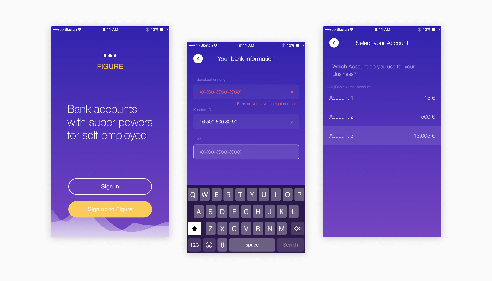
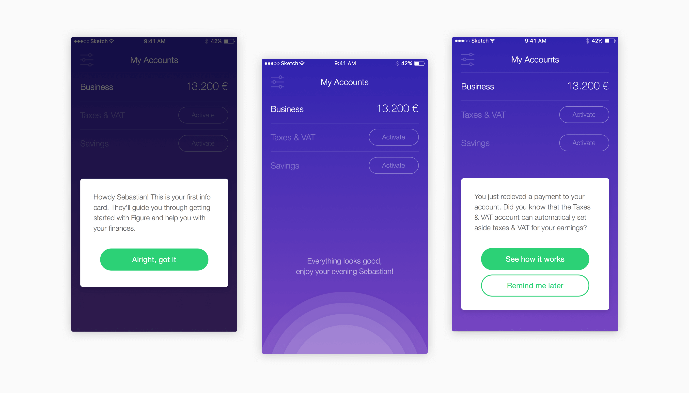
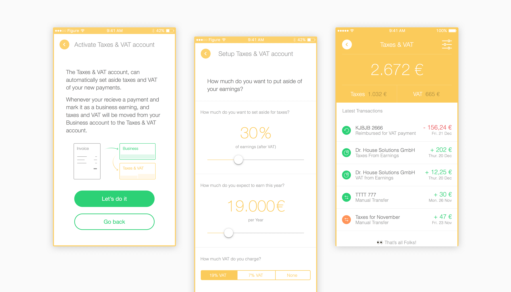
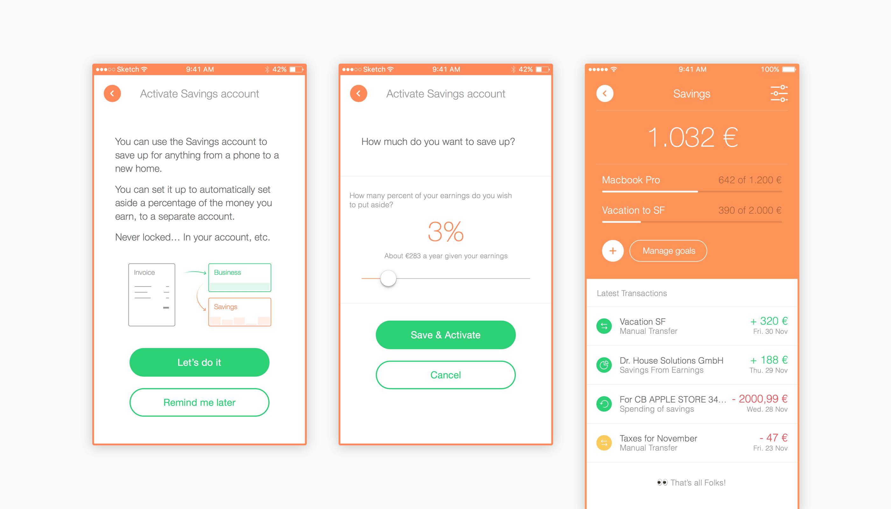
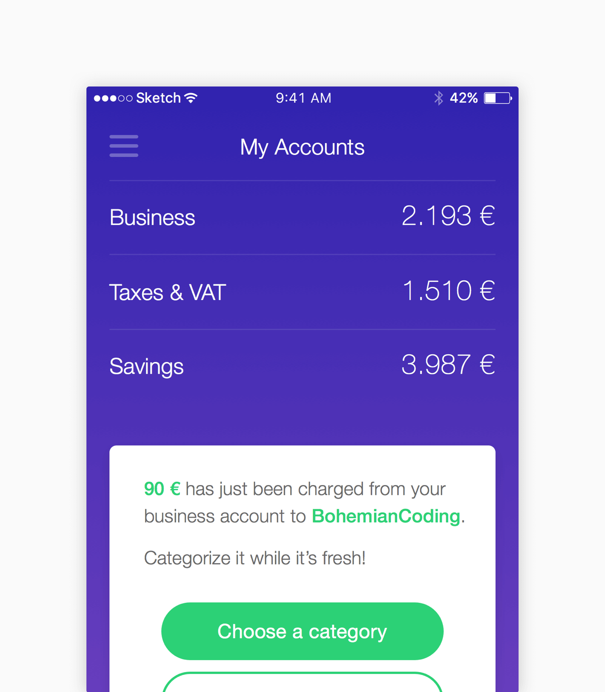
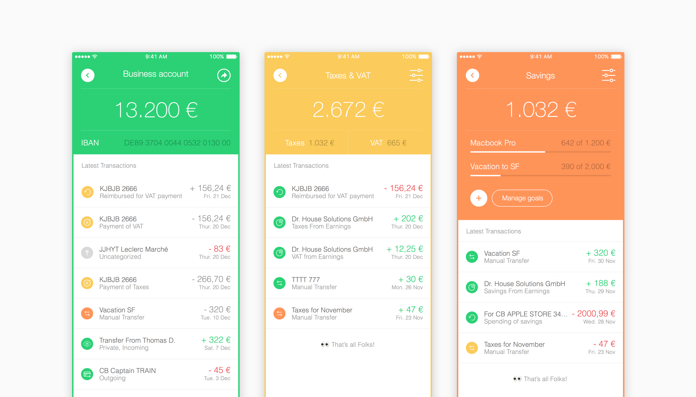
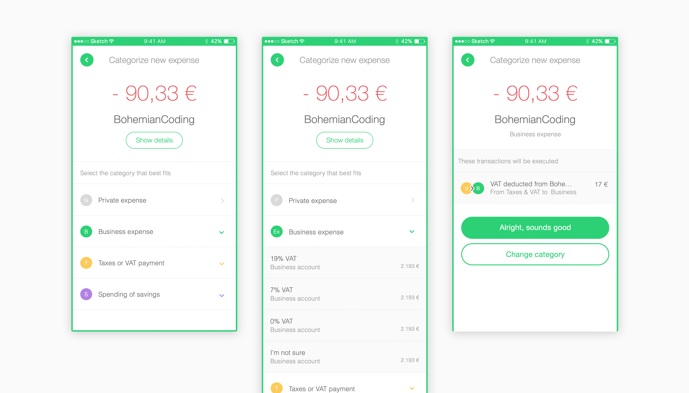

That’s how we started to talk about the frustrations of freelancing life at Founders. Many of us had struggled with the same around the same challenges in our time as freelancers.
As part of our exploration process, we went through rounds of interviews with freelancers, creating demos of prototypes around different features and ideas. Here are a few ideas we kept:

We separate business and personal bank accounts. Registered users connect the bank account that receives freelancer income to the Figure app.

A series of action cards help the user get onboarded, set up automated taxes and VAT payments or an extra savings account.



The dashboard is the principal view in the Figure app but each “account” (e.g. Business/Taxes/Savings) use the same layout and same transactions list.

Each transaction can be edited to generate automation, as shown below. By categorizing this expense as the appropriate VAT business expense, Figure will transfer a positive amount from your VAT account to your Business account.

The Figure app/prototype generated enough interest with different stakeholder groups for us to pursue building the first prototype. We’ve since handed it over to a dedicated team that is now running the company under the name of Kontist.